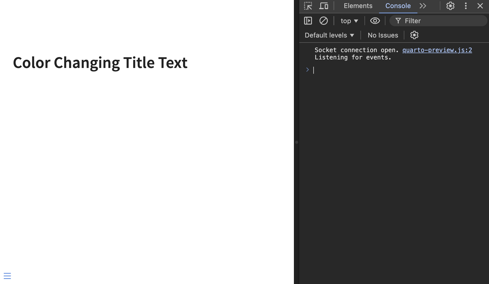

12 Fragments
12.1 Highlight incremental slides
The use of incremental lists is a great way to add a little something to a set of slides. It also avoids a wall of text, allowing the presenter to show one bullet at a time. All in all, this is helpful as it can be used to focus the viewers’ attention.
As a reminder, we create an incremental list using the following syntax:
::: {.incremental}
- thing 1
- thing 2
:::We can add another class to this div and use it to style it more.
::: {.incremental .highlight-last}
- thing 1
- thing 2
:::then we use this to style our list. Below .current-fragment refers to the last shown item in the list. Setting the color: grey isn’t necessary, but it is a way to downplay the “not-current” items
.highlight-last {
color: grey;
.current-fragment {
color: #5500ff;
}
}These together yield these slides:
12.2 Changing fragments with CSS
At the most fundamental level, a fragment can be split into 3 stages
- before
- current
- after
determining which stage is handled completely by revealjs using the fragment-index attribute. The way we can make things happen is to apply a different style to each of the 3 stages.
the maximal fragment signature is as follows, with fragment-name being the name of the fragment in question. For them to work properly you have to list them in the following order. Which corresponds to before, after, and current.
.reveal .slides section .fragment.fragment-name { } .reveal .slides section .fragment.fragment-name.visible { } .reveal .slides section .fragment.fragment-name.current-fragment { }
The reason why this ordering is important is because .visible and .current-fragment are triggered at the same time. And because I simplified the order a little too much. There isn’t before, current, and after. Instead, we have always, current, and not-before-current. In essence, they do the same, as long as you order them in this order to make sure they cascade properly.
Before we try to implement a fragment by ourselves, we need to note one thing real quick. Each of these stages is styled a specific way by default. In practice, what this means is that the before style has the following attributes set to make the text invisible:
opacity: 0;
visibility: hidden;If you want the text to be visible before the fragment triggers, simply set these two attributes to unset.
Another note I would like to add is that while you are able to modify anything in a fragment, as it is just triggering CSS, you should be careful about position and size. While you might be able to make it work, it is likely to cause a lot of shifting and jittering as elements resize.
Looking at the source code for the default fragments gives us a good idea for how different styles of fragments work.
12.3 Example 1
This first example illustrates how the different phases work in a fragment. We have thus created an rgb fragment that assigns a different color to each of the 3 phases. We unset both opacity and visibility to have the text appear beforehand. This leaves us with the following fragment:
.reveal .slides section .fragment.rgb {
opacity: unset;
visibility: unset;
color: red;
}
.reveal .slides section .fragment.rgb.visible {
color: blue;
}
.reveal .slides section .fragment.rgb.current-fragment {
color: green;
}Advancing and de-advancing(?) the slides showcase how the different classes are applied for fragments.
Worth noting that this single fragment could be rewritten as the following using SCSS nesting.
12.4 Example 2
One custom fragment I use from time to time is the background highlighted style. And it is very simple, instead of changing the color of the text, it changes the background color. I find that it is a much stronger indication than changing the text itself.
This fragment gives us two things. I leave the text visible beforehand. Then it turns the background orange, and after it lightens the background color a little bit.
$theme-orange: #FFB81A;
.reveal .slides section .fragment.hl-orange {
opacity: unset;
visibility: unset;
&.visible {
background-color: $theme-orange;
}
&.current-fragment {
background-color: darken($theme-orange, 10%);
}
}This once is nice and flexible because it is easy to extend.
$theme-orange: #FFB81A;
$theme-yellow: #FFD571;
$theme-brown: #E2AE86;
$theme-pink: #FED7E1;
.reveal .slides section .fragment {
&.hl-orange,
&.hl-yellow,
&.hl-pink,
&.hl-brown {
opacity: 1;
visibility: inherit
}
&.hl-brown.visible {
background-color: $theme-brown;
}
&.hl-brown.current-fragment {
background-color: darken($theme-brown, 10%);
}
&.hl-orange.visible {
background-color: $theme-orange;
}
&.hl-orange.current-fragment {
background-color: darken($theme-orange, 10%);
}
&.hl-yellow.visible {
background-color: $theme-yellow;
}
&.hl-yellow.current-fragment {
background-color: darken($theme-yellow, 10%);
}
&.hl-pink.visible {
background-color: $theme-pink;
}
&.hl-pink.current-fragment {
background-color: darken($theme-pink, 10%);
}
}And we are willing to tap into some scss we can condense it down quite a lot using SCSS loops.
$colors: (
"orange": #FFB81A,
"yellow": #FFD571,
"brown": #E2AE86,
"pink": #FED7E1
);
@each $name, $color in $colors {
.reveal .slides section .fragment.hl-#{$name} {
opacity: unset;
visibility: unset;
&.visible {
background-color: lighten($color, 5%);
}
&.current-fragment {
background-color: $color;
}
}
}12.5 Example 3
The last example included a bit of flair by having the current fragment element be a slightly different color and then changing it after. We can simplify it a bit by not specifying the .current-fragment class.
$theme-orange: #FFB81A; .reveal .slides section .fragment.hl-orange { opacity: unset; visibility: unset; &.visible { background-color: $theme-orange; } }
This fragment works more or less the same way as before but doesn’t change color once it is applied. It will be a more appropriate fragment many times.
This leads us to our final piece of knowledge in this blog post. We don’t have to fully specify a fragment. We just have to declare how we want it to behave differently, and then the default “stay hidden, then appear” fragment.
12.6 Fragments 201
When a fragment is either shown or hidden reveal.js (the engine that powers our slides) will dispatch an event. This event can be picked up using JavaScript.
You will need a little bit of Javascript knowledge, but I found that you don’t need a lot of knowledge to produce useful things for slides. Once your slides are rendered in your browser, you can toggle the developer tools, where you can find a javascript console. This is where I do the work needed.

We can capture the event using the following snippets of code
Reveal.on('fragmentshown', (event) => {
// event.fragment = the fragment DOM element
});
Reveal.on('fragmenthidden', (event) => {
// event.fragment = the fragment DOM element
});Reveal is the javascript object that powers the whole presentation. To have fun things happening when we use fragments, we need to write some code inside these curly brackets. The first chunk of code runs whenever a fragment appears, and the second runs whenever a fragment disappears. In in this environment, we have access to the event which is the DOM element of fragment div itself as created in our slides. We can take advantage of that in different ways as you will see.
Event {
"isTrusted": false,
"fragment": "Node",
"fragments": ["Node"],
"type": "fragmentshown",
"target": "Node",
"currentTarget": "Node",
"eventPhase": 2,
"bubbles": true,
"cancelable": true,
"defaultPrevented": false,
"composed": false,
"timeStamp": 2259.5,
"srcElement": "Node",
"returnValue": true,
"cancelBubble": false,
"NONE": 0,
"CAPTURING_PHASE": 1,
"AT_TARGET": 2,
"BUBBLING_PHASE": 3
}Last note, you can have multiple of these Reveal.on() statements, as they will trigger one after another. So depending on how you want to organize, both styles are valid.
// one statement
Reveal.on('fragmentshown', (event) => {
fragment_style_1(event);
fragment_style_2(event);
fragment_style_3(event);
});
// multiple statements
Reveal.on('fragmentshown', (event) => {
fragment_style_1(event);
});
Reveal.on('fragmentshown', (event) => {
fragment_style_2(event);
});
Reveal.on('fragmentshown', (event) => {
fragment_style_3(event);
});Lastly, the way I set up my revealjs slides to do javascript is by setting the include-after-body attribute in the yaml file,
format:
revealjs:
include-after-body:
- "_color.html"and having it point to a file that looks like this:
<script type="text/javascript">
</script>then inside we put my javascript code, which for this blog post will be some Reveal.on() calls.
12.7 Color changing
This first example is going to be an illustrative example of what we can do and how to do it. And it will thus not be very useful.
The first lesson I want to show is that you are not limited to modifying the content inside the fragment. This means that we can actually have empty fragments that modify some other element. So in our document, we could have a slide that looks like this:
## Color Changing Title Text
::: {.fragment .color}
:::I want to change the color of the header when the fragment triggers. To do that we need two things.
- The color to change it into
- Access to the header element
The first part is easy, I found a “random javascript” script online. We start by assigning that to a variable.
random_color = '#'+(Math.random()*0xFFFFFF<<0).toString(16);Next, we need to find the header. Remember the Reveal object I mentioned earlier? It has a very handy .getCurrentSlide() method. When run we get the current slide we are on, which is exactly what we need.
Reveal.getCurrentSlide()
<section id="color-changing-title-text" class="slide level2 present" style="display: block;" data-fragment="-1">
<h2>Color Changing Title Text</h2>
<div class="fragment color" data-fragment-index="0"></div>
<div class="quarto-auto-generated-content"></div>
</section>From this, we can get to the title using .querySelector()
We don’t need .querySelectorAll() because by definition there will only be one h2 on a quarto slide using default options.
Reveal
.getCurrentSlide()
.querySelector("h2")
<h2>Color Changing Title Text</h2>We can then change the color by selecting the style element of the div and updating the color variable.
Reveal
.getCurrentSlide()
.querySelector("h2")
.style
.color = random_color;And that is technically all we need. Put that code inside the Reveal.on() statements, and the color of the header will change each time the fragment is triggered.
One thing worth remembering is that this javascript code will run everything a fragment is run. So to limit it, we can make sure it only runs when we want it to. This is why I gave the fragment a .color class. We can use the following if statement to make sure our code only runs when we want it to.
if (event.fragment.classList.contains("color")) {
}We could stop here. But I want to show a little more with this example. For right the color changes randomly, but we could allow for a little bit of information transfer. HTML has this concept called datasets. Each div can have a data set of information. We should use this to give our fragments more flexibility.
Luckily it is quite effortless to specify data set values in quarto. Below is the same fragment div as before, but with a data set value named color.
:::: {.fragment .color data-color="orange"}
:::We can now on the javascript side pull out this value with ease.
color = event.fragment.dataset.color;We are not doing any input checking, so this code will fail silently if you don’t have a color specified in the div.
And set it the same as before.
Reveal
.getCurrentSlide()
.querySelector("h2")
.style
.color = color;This will give us the final fragment code as follows
Reveal.on('fragmentshown', (event) => {
if (event.fragment.classList.contains("color")) {
random_color = '#'+(Math.random()*0xFFFFFF<<0).toString(16);
Reveal
.getCurrentSlide()
.querySelector("h2")
.style
.color = random_color;
}
});
Reveal.on('fragmenthidden', (event) => {
if (event.fragment.classList.contains("color")) {
color = event.fragment.dataset.color;
Reveal
.getCurrentSlide()
.querySelector("h2")
.style
.color = color;
}
});12.8 Scroll output
Sometimes you run into a situation where you want to interact with an element on a slide. This can happen when you need to scroll or toggle something. While that would be fine to do by hand, it can be hard to do casually, and impossible to do if you are using a clicker.
Scrolling text in a window is one thing that isn’t that hard to do with JavaScript.
We will follow the same steps as before.
- Find the element we want to show
- Figure out how to scroll it
The element can again be found using .getCurrentSlide() and querySelector() after a little digging.
Next, we need to figure out how to scroll it. This can be done using the .scrollTo() method. This function should be passed on to how much we want to scroll and how. As far as I know, this can only be set using pixel values so we have to try a couple of times to get it right. 1000 appears enough for this example to get us all the way to the bottom. Setting behavior to smooth for a little flair.
{
top: 1000,
behavior: "smooth",
}This means that the fragment is finished with
Reveal.on('fragmentshown', (event) => {
if (event.fragment.classList.contains("scroll")) {
Reveal
.getCurrentSlide()
.querySelector(".cell-output code")
.scrollTo({
top: 1000,
behavior: "smooth",
})
}
});But wait! What if you have to go back? this is where fragmenthidden is needed, we simply take the preview code and say we want to go back to the top by setting top to 0.
Reveal.on('fragmenthidden', (event) => {
if (event.fragment.classList.contains("scroll")) {
Reveal
.getCurrentSlide()
.querySelector(".cell-output code")
.scrollTo({
top: 0,
behavior: "smooth",
})
}
});Some changes to our slides are really hard to reverse. They would thus make for bad fragments. You could implement them halfway without the fragmenthidden and you would just need to be really confident that you never have to go backwards in your slides.
We didn’t do it here, but you could use dataset values to help determine which elements should be scrolled and how much to scroll them by instead of hardcoding it all as we do here.
12.9 Tabset advance
Quarto also has tabset support for slides, which is again a very nice feature. It runs into the same clicker interaction we noted earlier. It requires a mouse to correctly toggle in the middle of a presentation.
We can deal with this as well. As always we need to find the elements and how to toggle them.
The astute reader will notice that the following will only work on a tabset with 2 tabs. Making this fragment work for multiple tabs is left as an exercise for the reader.
We are again using .getCurrentSlide() and querySelector(), and with some trial and error, determine that the following two CSS selectors captures the two tabs.
.panel-tabset ul li:first-of-type a.panel-tabset ul li:last-of-type a
And we are lucky because these elements have a working .click() method that we can use.
This means that the full fragment looks like this:
Reveal.on('fragmentshown', (event) => {
if (event.fragment.classList.contains("tabswitch")) {
Reveal
.getCurrentSlide()
.querySelector(".panel-tabset ul li:last-of-type a")
.click()
}
});
Reveal.on('fragmenthidden', (event) => {
if (event.fragment.classList.contains("tabswitch")) {
Reveal
.getCurrentSlide()
.querySelector(".panel-tabset ul li:first-of-type a")
.click()
}
});12.10 advance embedded slides
The last example I’ll show for now is one you have seen me use already. I like to put quarto slides inside quarto slides. However, it becomes messy to advance the embedded slides, because they take focus of the mouse. I have used a fragment to advance these.
We start by embedding a set of slides in our set of slides. We do thing with <iframe class="slide-deck" src="fragment-scroll.html" style="width:100%; height: 500px;" ></iframe>.
The Reveal object has a fairly extensive API you can use. So we just need to fetch the right Reveal object so we can use the .left() and .right() methods to advance the slides. It took me a while to find the right code, but .contentWindow was the missing piece. The following returns the embedded Reveal object.
Reveal
.getCurrentSlide()
.querySelector("iframe")
.contentWindow
.RevealWhich then gives us the following as our fragment
Reveal.on('fragmentshown', event => {
if (event.fragment.classList.contains("advance-slide")) {
Reveal
.getCurrentSlide()
.querySelector("iframe")
.contentWindow
.Reveal
.right()
}
});
Reveal.on('fragmenthidden', event => {
if (event.fragment.classList.contains("advance-slide")) {
Reveal
.getCurrentSlide()
.querySelector("iframe")
.contentWindow
.Reveal
.left()
}
});